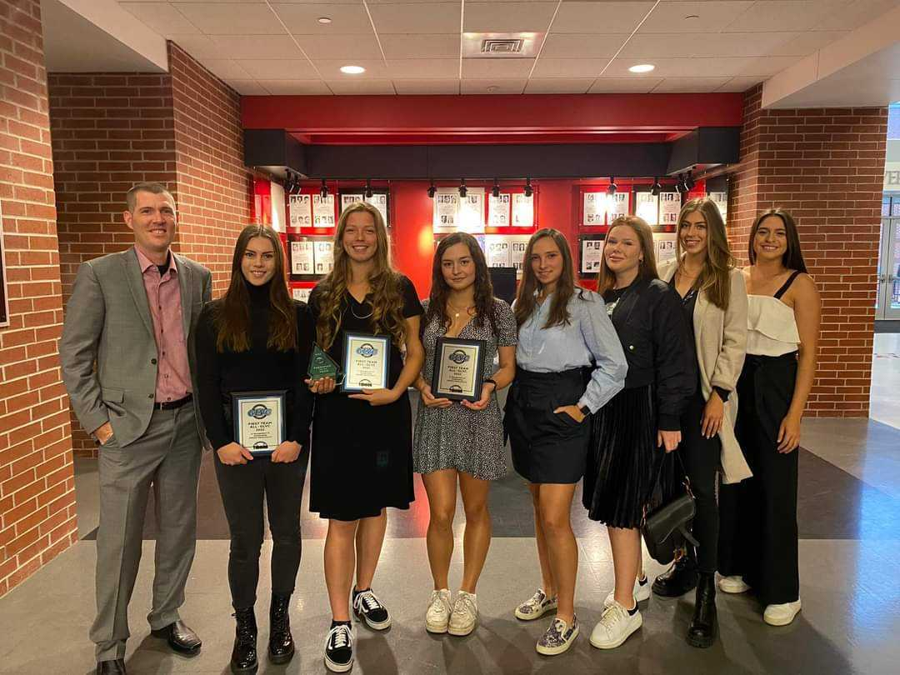

Since 2022, I've had the honor of being the captain of Drury University's tennis team. This experience has been transformative, teaching me valuable lessons in teamwork, resilience, and unwavering support during challenging moments. Through tennis, I have formed lifelong friendships with incredible people who have become like family to me. I am deeply grateful for the opportunities tennis has provided, and I carry with me a great passion for the sport that I know will endure for the rest of my life.
As a member of the cyber defense club, I've been thrust into the fast-paced world of cybersecurity. Joining the club was a big step outside my comfort zone, but it's proven to be a life-changing decision. Through this experience, I've not only gained confidence but also acquired hands-on experience in the cybersecurity field. Every challenge helps me learn and adapt, pushing me to thrive in the world of cybersecurity.

In 2023, I had the opportunity to attend the MINC WIC conference. MINK WIC is a regional tech conference that celebrates women in computing. It was a great occasion to hear from numerous successful women in the field. Their stories, experiences, and invaluable advice offered powerful insights for women thriving in their careers. It was an inspiring opportunity that reinforced the importance of diversity and empowerment.

SCHOOL
In the fall of 2021, I enrolled as a student at Drury University. For the first year, my documents had a conspicuous label: "UNDECIDED" in the place reserved for my major. Uncertain about which academic path to choose, I explored various interests. I was always eager to try new things, and I believed it would be the best way to discover what interested me. It wasn't until I attended a cyber security meeting that everything fell into place. Meeting Professor Shannon McMurtry left a lasting impression; his warmth and expertise helped me make my decision. To help myself grow in my field, I joined the Cyber Defense Club. It was one of the best decisions I could ever make. This club helped me learn so much and feel more comfortable with cyber security problems.
To summarize my university experience, my overall GPA is 3.74, with my major GPA being 3.88 GPA. With time, I've come to realize that cyber security courses resonate with me the most. The challenges and complexities of the field captivate my interest like nothing else, fueling my determination to excel in this domain.
Cyber Defense Club
During our weekly meetings, we're gearing up for cyber security competitions, including the prestigious National Collegiate Cyber Defense Competition. In 2023, we were honored to be invited to the Cyber Force Competition, alongside top-tier universities. Our training covers a wide array of tools and platforms, like VMware, Splunk, NMAP, Wireshark, and many others. Additionally, every year, all members participate in the National Cyber League, further honing our skills and camaraderie in the field of cyber security.
Experience
In 2023, I began my role as a cybersecurity technician at Drury University. I was initially tasked with reviewing and crafting cybersecurity policies and plans, but my responsibilities quickly expanded. Within months, I took on additional duties from the networking department, including preparing switches for installation, maintaining detailed records of switch inventory, and managing devices in the university's networking closets. This dynamic role allows me to contribute to both cybersecurity initiatives and network infrastructure, ensuring a good and secure digital environment for the university community.
Awards
Dean's Scholarship: Scholarship for good academic results for incoming students.
Athletic Scholarship: Scholarship for student-athletes for performance in a sports program.
Dean's List: Student with semester results higher than 3.6 GPA.
Pride Award: Recognition award given by coaches to one student per year for being a good example.
Tennis Awards
Freshman of the year: Award for the freshman with the best results.
Regional champion: Award for the team winning the regional championship.
Conference champion: Award for a team winning conference championship.
Sportsmanship of the year: Recognition award given by coaches from the whole conference to one athlete per year for being an example of good sportsmanship.
GLVC team of the year: Award for players with great results at the GLVC conference.
Future
In the future, I see myself as a highly experienced cyber security specialist involved in plenty of meaningful and interesting projects. I hope I will have an opportunity to keep working among amazing and motivating people.